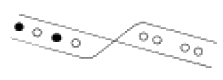
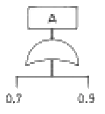
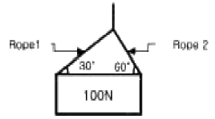

1과목: 안전관리론
1. 인간의 적성과 안전과의 관계를 설명한 것으로 맞는 것은?
2. Bird의 재해분포에 따르면 10건의 경상(물적 또는 인적상해)사고가 발생하였을 때 무상해, 무사고(위험순간)는 몇 건이 발생하는가?
3. 안전교육에서 학습경험선정의 원리와 거리가 먼 것은?
4. 안전교육과 관련하여 바르게 설명한 것은?
5. 위험에 대한 안전을 조사할 때의 사전조사에 해당되지않는 것은?
6. 탱크, 보일러 또는 반응탑의 내부 등 산소결핍이 우려되는 장소에서 아르곤, 탄산가스 또는 헬륨을 사용하여 용접작업을 시키려고 한다. 이때 사용되어야 할 보호구는?
7. 다음 중 프로그램 학습법의 단점에 해당되지 않는 것은?
8. 하인리히 법칙에 따르면 상해 사고가 20건이 발생할 때 무상해 사고는 몇 건이 발생하는가?
9. 교육 실시 원칙상 한번에 하나 하나씩 나누어 확실하게 이해시켜야 하는 단계는?
10. 메슬로우의 인간의 욕구중 5번째 단계에 속하는 것은?
11. 다음 중 하인리히는 인적사고 중 1:29:300의 법칙을 적용하였다. 여기에서 300의 의미는?
12. 방진마스크의 선정기준에 해당되지 않는 것은?
13. 안전관리의 일상점검 업무 단계를 설명한 것이다. 옳게 연결된 것은?
14. 안전교육 계획수립시 고려할 사항이 아닌 것은?
15. 다음은 물건의 정리를 나타낸 그림이다. 관계 없는 것은?

16. 안전조직 중 안전스탭의 주역할이 아닌 것은?
17. 재해발생원인을 관리적인 측면에서 분류하면 기술적 원인, 교육적 원인, 작업관리상 원인으로 분류할 수 있다. 교육적 원인이 아닌 것은?
18. 다음 중 작업자세와 관련하여 틀린 것은?
19. TWI의 교육 내용 중 인간관계 관리방법 즉 부하통솔법을 주로 다루는 것은?
20. 브레인스토밍팀 미팅 기법의 4원칙에 해당되지 않는 것은?
2과목: 인간공학 및 시스템안전공학
21. 인간 실수의 형태를 크게 작위(Commission)실수와 부작위(Omission)실수로 나눌수 있다. 다음 중 작위(Commission) 실수를 바르게 설명한 것은?
22. "작업설계시의 딜레마(dilemma)" 란?
23. 다음은 초기고장과 마모고장의 고장형태와 그 예방대책에 관한 내용이다. 연결이 잘못된 것은?
24. 단순반복 작업으로 인하여 발생되는 건강장애 즉 CTDS 의 발생요인이 아닌 것은?
25. 작업장의 색은 매우 중요하다. 색을 선택할 때 기본 조건이 아닌 것은?
26. 다음 시스템 A의 확률은?

27. 신호검출이론의 적용대상이 아닌 것은?
28. 다음 중 진동에 의한 영향이 가장 적은 작업은?
29. 다음 중 시스템안전 위험분석(SSHA)을 수행하기 위한 최초의 작업으로서 구상단계나 설계 및 발주의 극히 초기 에 실시되는 것은?
30. 우리가 흔히 사용하는 시각적 표시장치와 청각적 표시장치 중 청각적 표시장치를 사용하는 것이 더 좋은 경우는?
31. 디버깅(debugging)이란?
32. 인간의 신뢰도가 0.6, 기계의 신뢰도가 0.9이고 인간과 기계가 직렬체제로 작업할 때의 신뢰도는 얼마인가?
33. 예비위험 분석에서 달성하기 위하여 노력하여야 하는 4가지 주요 사항이 아닌 것은?
34. 작업장의 색채를 설명한 것이으로 틀린 것은?
35. 인간 기계시스템에서 수동제어 시스템에 속하지 않는 것은?
36. 감각적으로 물리현상을 왜곡하는 지각현상에 해당되는 것은?
37. 위험 및 운전성 검토(HAZOP)의 성패를 좌우하는 중요 요인과 거리가 먼 것은?
38. 반사율이 80%, 글자의 밝기가 400cd/m2인 VDT화면에 314lux의 조명이 있다면 대비는? [단, 대비의 정의는 (배경광-목표광)/배경광을 사용한다.]
39. 공장설비의 안전화를 위하여 레이아웃에 대한 검토를 요하는 사항과 거리가 먼 것은?
40. F.T.A(Fault Tree Analysis)란 무엇인가?
3과목: 기계위험방지기술
41. 산업용 로봇의 안전방호사항으로 적합한 것은?
42. 다음 중 동력전달장치에서 재해가 가장 많이 발생하는 것은?
43. 실제용접에서 정격전류 보다 적은전류로 용접하는 경우가 많은데 이때의 허용 사용률(%) 정의로 맞는 것은?
44. 보일러의 안전장치에 해당하지 않는 것은?
45. 그림에서와 같이 100 N의 물건을 불안하게 매달았을 때, 로프 1 및 로프 2 에 작용하는 장력의 크기는?

46. 프레스의 안전장치 중 가장 완전한 방호가 가능한 안전장치는?
47. 슬라이드가 내려옴에 따라 손을 쳐내는 막대가 좌우 또는 앞뒤로 왕복하면서 위험점으로부터 손을 보호하여 주는 프레스의 안전장치는?
48. 다음 중 보일러에 관한 설명으로서 옳지 않은 것은?
49. 축의 설계시 주의할 점이 아닌 것은?
50. 선반에서 사용하는 바이트와 관련된 방호장치는?
51. 2000(rpm)인 연삭숫돌의 지름이 5(cm)이라면 최대원주속도는? (단, π = 3.14임.)
52. 용접장치에 사용되는 가스 장치실의 구조에 대한 설명 중 틀린 것은?
53. 양도, 대여, 설치가 제한되는 위험기계기구에 해당되지않는 것은?
54. 프레스 작업에서 가장 중요한 점검은?
55. 승강기의 안전장치가 아닌 것은?
56. 크레인 로프에 4ton의 중량을 걸어 2m/sec2의 가속도로 감아올릴 때 로프에 걸리는 하중은? (단, 중력가속도는 9.8m/sec2 이다.)
57. 기계부품에 작용하는 힘 중에서 안전율을 가장 크게 취하여야 할 힘의 종류는?
58. 다음 유해·위험기계·기구 중에서 진동과 소음을 동시에 수반되는 기계설비가 아닌 것은?
59. 전동공구 작업시 주의사항으로 틀린 것은?
60. 호이스트(hoist)에서 버튼식 조정판에 연결하는 전원은 얼마가 가장 적당한가?
4과목: 전기위험방지기술
61. 코로나 방전이 발생하면 공기 중에 무엇이 생성되는가?
62. 아세톤을 취급하는 작업장에서 작업자의 정전기 방전으로 인한 화재폭발 재해를 방지하기 위해서는 인체대전전위는 얼마이하로 유지해야 하는가? (단, 인체의 정전용량 100(PF)이고, 아세톤의 최소 착화에너지는 1.15(mJ)로 하며 기타의 조건은 무시한다)
63. 전동기를 운전하고자 할 때 개폐기의 조작순서가 맞는 것은?
64. 조명기구 선정시 고려하여야 할 사항이 아닌 것은?
65. 방폭지역의 구분시 환기가 충분한 장소란 "대기중의 가스. 증기의 밀도가 폭발하한계의 ( )를 초과하여 축적되는 것을 방지하는데 충분한 환기량이 보장되는 장소"를 말한다. 이 때 ( )안 알맞는 수치는?
66. 가습에 의한 부도체의 정전기 대전방지에서 사용할 수 없는 부도체는 다음 중 어느 기를 가진 물질인가?
67. 교류아크 용접기를 용접 중단하였을 경우 용접봉에 인가되는 안전전압[V]은?
68. 접지 저항값이 맞는 것은?
69. 인체의 전기저항 R을 1000[Ω]이라하면 이때 위험 한계 에너지는 몇 J인가? (단, 통전시간은 1초임)
70. 지중에 매설된 금속제의 수도관에 접지할 수 있는 경우의 접지 저항값은?
71. 두가지 용제를 사용하고 있는 어느 도장공장에서 폭발사고가 발생하여 3사람의 부상자를 발생시켰다. 부상자가 입고 있던 조건의 복장으로 정전용량이 120pF 인 사람이 5m 도보후 표면전위를 측정했더니 3000V가 측정되었다. 사용한 혼합용제 가스의 최소 착화에너지는 얼마 이었겠는가?
72. 정전작업은 일상생활에 불편을 주어서는 아니되므로 시간을 단축하거나 심야에 작업을 하게 된다. 정전작업 종료시 통전을 위한 순서가 올바른 것은?
73. 아아크를 발생하는 고압용 전기기계, 기구는 가연성물질에 인화되지 않도록 벽 또는 천정으로부터 최소 몇[m]이상 이격하여야 하는가?
74. 다음은 내압방폭구조의 기본적 성능에 관한 사항이다. 해당되지 않는 것은?
75. 정전기 발생 방지책이 아닌 것은?
76. 정전기 발생현상의 분류에 해당되지 않는 것은?
77. 전동기용 퓨우즈의 사용 목적이 알맞는 것은?
78. 정전기 방전으로 인한 재해가 발생될 조건이 아닌 경우는?
79. 인체의 피부전기저항은 여러가지의 제조건에 의해서 변화를 일으키는데 제조건으로써 가장 가까운 것은?
80. 제전기는 공기 중 이온을 생성해서 제전을 하는데 다음 중 제전능력이 가장 뛰어난 제전기는?
5과목: 화학설비위험방지기술
81. 빈혈 및 백혈병의 주원인이 되는 유해성 물질은?
82. 발화성 약품을 저장하는 다음의 방법 중 틀린 것은?
83. 왕복식 압축기의 운전중 실린더 주변에 이상음이 발생한 경우의 원인이 될수 없는 것은?
84. 다음 분말소화약제 중 ABC분말의 주성분은 어느 것인가?
85. 원유정제처리업의 사업주는 안전성 확보를 위해 공정안전보고서를 제출하도록 법제화 하였다. 공정안전 보고서에 포함되어야 할 사항으로 거리가 먼 것은?
86. 압력상승에 기인하는 피해가 예측되는 경우에 검토를 요하는 사항과 거리가 가장 먼 것은?
87. 물 분무 소화기에 대한 설명 중 틀린 것은?
88. 다음 중 산업안전보건법상 위험물질의 기준량을 올바르게 나타낸 것은?
89. 다음은 상압의 공기.아세틸렌 혼합가스의 최소발화에너지(MIE)에 관한 사항이다. 옳은 것은?
90. 가연성가스가 충전된 용기를 사용할 때 잘못된 작업 방법은?
91. 산업안전보건법상 위험물질을 분류한 것이다. 옳은 것은?
92. 마그네슘의 저장 및 안전취급에 관한 설명 중 틀린 것은?
93. 사업주가 가스집합장치를 설치하려 한다. 화기로부터 몇m 이상 떨어진 장소에 설치하여야 하는가?
94. 활성화에너지 E가 대체적으로 같은 값을 가지는 가연성기체의 폭발하한계(x)와 몰 연소열(Q)사이에는 어떤 근사적인 관계가 성립하는가? (단, n은 정수임.)
95. 공기 중에서 아세틸렌의 폭발 하한계는 2.5(부피%)이다. 이 경우 표준상태에서 아세틸렌과 공기의 혼합기체 1m3에 함유되어 있는 아세틸렌의 양은 약 몇 g 인가?
96. 용적비율로 80% CH4, 15% C2H6, 4% C3H8, 1% C4H10로 이루어진 혼합가스의 폭발범위(vol%)는 약 얼마인가? [단, 각 가스의 폭발범위(vol%)는 CH4 5∼15, C2H6 3∼12.5, C3H8 2.1∼9.5, C4H10 1.9∼8.5 이다.]
97. 화학적 반응에 의한 에너지가 점화원이 되지 않게 할 수있는 대책중 거리가 가장 먼 것은?
98. 다음 중 반응기의 구조 방식에 의한 분류에 해당하는 것은?
99. 다음 중 할로겐화 반응의 특징이 아닌 것은?
100. 압력용기, 배관, 덕트 및 봄베 등의 밀폐장치가 과잉압력 또는 진공에 의해 파손될 위험에 있을 경우 이를 방지하기 안전장치로서 특히 화학변화에 의한 에너지 방출과 같이 짧은 시간내의 급격한 압력변화에 적합한 것은?
6과목: 건설안전기술
101. 산업안전보건법상 자체검사 대상 기계·기구가 아닌 것은?
102. 토석붕괴 방지방법에 대한 설명으로 틀린 것은?
103. 철골공사 작업시 산업안전보건법상 작업을 중지해야 할 악천후는?
104. 달비계 작업발판의 최대적재하중을 정함에 있어서 안전계수로 옳은 것은?
1⑤. 강선의 안전계수가 4이고 2000kg/cm2 의 인장강도를 갖는 경우에 최대허용응력은?
106. 흙의 연경도에서 소성상태와 액성상태 사이의 한계를 무엇이라 하는가?
107. 콘크리트 타설시의 유의사항 중 옳지 않은 것은?
108. 다음 중 건설용 양중기에 해당하지 않는 것은?
109. 다음 중 터널 굴착 작업시 시공계획에 포함되어야 할 사항으로 거리가 먼 것은?
110. 흙의 안식각을 가장 잘 설명한 것은?
111. 본 터널(main tunnel)을 시공하기 전에 터널에서 약간 떨어진 곳에 지질조사, 환기, 배수, 운반 등의 상태를 알아보기 위하여 설치하는 터널은?
112. 강관비계의 종류 중 단관비계를 설치할 때 조립간격으로 옳은 것은? (단, 수직방향, 수평방향의 순서임)
113. 철제거푸집의 장점이 아닌 것은?
114. 콘크리트 타설시 내부진동기를 이용한 진동다지기를 할 때 사용상의 주의사항으로 잘못된 것은?
115. 다음 중 발파공의 충전재료로 부적당한 것은?
116. 높이 2m 이상인 작업장에 설치하는 작업발판의 구조 및 설비에 관한 기준으로 옳지 않은 것은?
117. 다음 중 강말뚝의 특징으로 틀린 것은?
118. 다음 중 지반의 굴착시 풍화암의 기울기 기준으로 적절한 것은?(2021년 11월 19일 개정된 규정 적용됨)
119. 롤러의 표면에 돌기를 만들어 부착한 것으로 돌기가 전압층에 매입함에 의해 풍화암을 파쇄하여 흙 속의 간극수압을 소산하게 하고, 다짐의 유효 깊이가 큰 롤러는 무엇인가?
120. 특수지반 개량공법 중 하나인 지하연속벽 공법(Slurry Wall)의 특징이 아닌 것은?